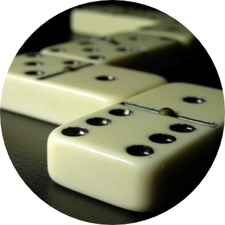

Today, let’s challenge ourselves with Codility’s Iota 2011 challenge. The details of the challenge are in the link (I can’t copy them here because of copyright :) ).
Essentially, we are playing something very similar to the board game Dominoes. We are given an initial and final numbers, and a set of dominoes tiles (that is, pairs of numbers, that can be placed in both directions), and we have to find the length of the minimum set of matching tiles that connects the initial and the final number. The only rule, like in Dominoes, is that only tiles with matching adjacent values can be placed next to each other.

Solution
After building a lookup table for the Dominoes tiles (the adjacent numbers), we can quickly solve this by building incrementally the set of values that we can reach, and keeping track of how many steps it costed us to get there (classic dynamic programming :).
Here’s the code that can do that in O(N·log(N)) time, and O(N) space. It passes Codility’s testing framework.
def solution(A):
# Check for corner case
if A[0] == A[-1]:
return 1
# Build lookup table for adjacent values
adjacent = {}
previous = None
for a in A:
if previous:
for first, second in [(a, previous), (previous, a)]:
s = adjacent.get(first, set())
s.add(second)
adjacent[first] = s
previous = a
# Build reachability set
reachability = {A[0]: 1}
just_added = set([A[0]])
while True:
# round
just_added_this_round = set()
while just_added:
element = just_added.pop()
distance = reachability[element]
for next_element in adjacent[element]:
if next_element in reachability:
continue
if next_element == A[-1]:
return distance + 1
reachability[next_element] = distance + 1
just_added_this_round.add(next_element)
just_added = just_added_this_round
if __name__ == '__main__':
print 'Testing...'
assert solution([1, 10, 6, 5, 10, 7, 5, 2]) == 4
assert solution([1, 5, 3, 5, 9, 7, 5, 2, 4]) == 4
assert solution([1, 1, 5, 3, 1]) == 1
print 'Ok!'